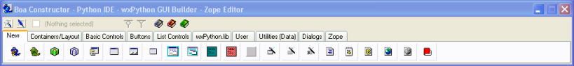
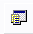
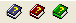

Getting Started Guide for Boa Constructor


|
|
|
|
Getting Started Guide for Boa Constructor |
|
|
|
Next:The Editor WindowUp:Getting Started Guide for Boa Constructor Previous:Installing and Starting Boa Constructor
The Palette window is the main window of the Boa Constructor
Program. Closing the Palette window will terminate the program. The
Palette contains two sections, a toolbar, and a multi-pane
notebook.

The toolbar gives access to the other windows in the Boa
Constructor application. You can hold the mouse pointer over the
different icons and help tips will appear. These help tips will tell
you what the buttons do.
The notebook (or tabbed pane) provides a set of components which you can use while building your applications. The components are grouped for logical access.
The first group of components is called 'New'. This group provides components for creating new "files", that can be a Python Application, a Python Module, a Setup file, a Boa Application or others.
In earlier versions there was also a tab for “Dialogs”, to insert the code for e.g. a file dialog you can now use the new “code template” feature. At the place in your code where you want the dialog press “Alt-t” and select from the drop down list.

The
icon shown above is used to create a new Boa Application (its tool
tip is wx.App, refering to the base class it uses). The new
application consists of the application source file (App1.py) and the
initial frame (Frame1.py).
The application file is used as the starting point for the application. The default new application simply loads the form. The form is a blank form. You can add components to this form.
Boa constuctor opens the source code for the new application and the new form in the Editor Window.
Clicking the first one will bring the Inspector window to the
foreground.
Clicking the second one will bring the Editor window
to the foreground.
The check box will indicate that a compenent is
selected and the text "Nothing selected" will be replaced
with e.g. wx.Panel

Clicking the first one will bring up Boa help or help for the
selected component
Clicking the second one will bring up wxPython
help
Clicking the third one will bring up Python help
|
|
|
|
Getting Started Guide for Boa Constructor |
|
|
|
Next:The Editor WindowUp:Getting Started Guide for Boa Constructor Previous:Installing and Starting Boa Constructor